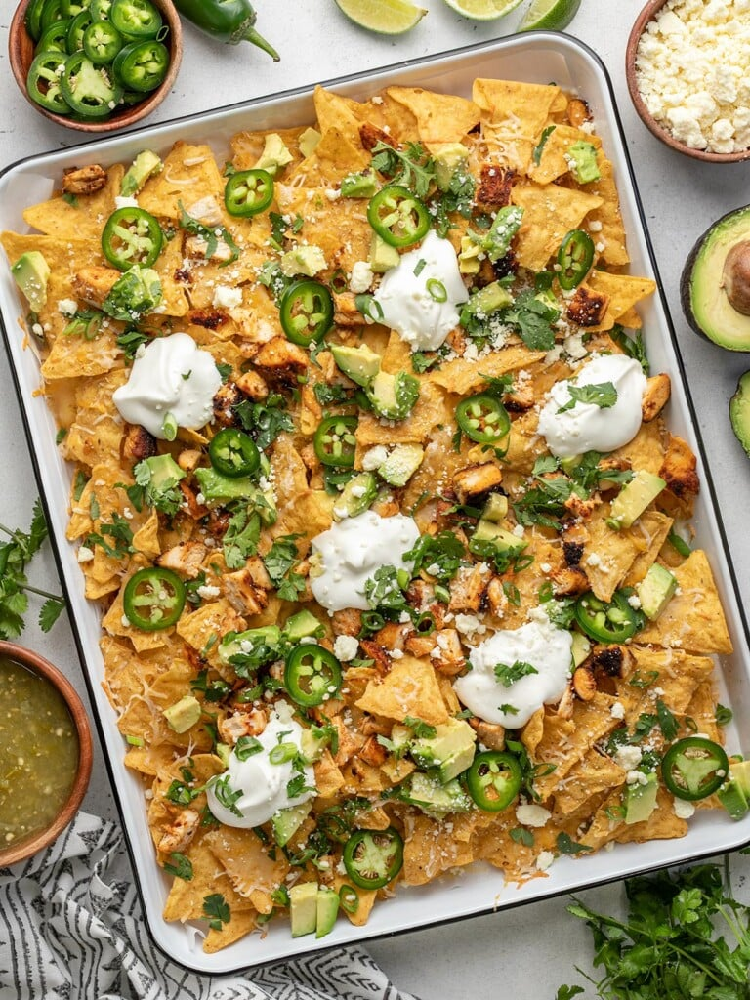

Chicken nachos

Description
This is THE BEST chicken nacho recipe! What's not to love about crispy corn chips loaded with succulent chicken breast and melted cheese?
Ingredients
- 1 Tbsp taco seasoning
- 1 lb. boneless, skinless chicken breast
- 1 Tbsp cooking oil
- 15 oz. corn tortilla chips (1 large bag)
- 3 cups shredded Mexican cheese blend
- 1 jalapeño
- 2 green onions
- 1/2 cup fresh cilantro
- 1 avocado
- 1 lime, zested and juiced
- 1/2 cup sour cream
- 2 Tbsp crumbled queso fresco
Steps
- Add a rack to the center of your oven and preheat it to 400°F. Pound the chicken breast an inch thick with a heavy skillet. Sprinkle liberally on both sides with taco seasoning.
- Add cooking oil to a heavy-bottomed skillet set over medium-high heat. Sear the chicken breast for 5 minutes, then flip it and cook for a few minutes more, or until a thermometer reads 165°F.
- Slice the jalapeño and two green onions. Chop the cilantro. Dice the avocado and drizzle lime juice over it to keep it from browning.
- When your chicken has reached an internal temperature of 165°F, remove it from the pan and let it rest for five minutes. Chop it into 1/2-inch pieces.
- Line a sheet pan with parchment paper. Add half a bag of corn chips to the pan. Top with half of the shredded cheese and half of the chopped chicken.
- Repeat the layering process with the remaining chips, cheese, and chicken. Bake at 400°F until the cheese melts, about 7 to 10 minutes.
- Sprinkle the nachos with the avocado, jalapeño, green onion, lime zest, and chopped cilantro. Finish with dollops of sour cream and sprinkle with crumbled queso fresco.